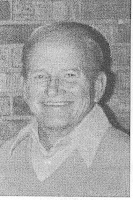

"Thanks, my friend ..."
11/11/2009
I've had two ventriloquist puppets that could be operated both manually and by remote. The first was a vent figure with remote electronics installed by my good buddy, Don Thieman. The figure had two remote movements: mouth and eyes. But in using that figure from stage only once, and then reviewing a video of my performance, I realized for a large audience, moving eyes on a figure sitting alone before the audience were not effective for those sitting further back than the first few rows. But a turning head, although it presented some difficult complications, was going to be a must. So my smiling buddy, who had built and flown remote controlled air planes nearly all his life came to my rescue again. We combined our creativity to build "Albert the Alligator" whose remote operations were: moving mouth, turning head, and nodding head. And I purposely chose an alligator for this project because he had a BIG mouth and a BIG head. Perfect! (You can see Albert and get an inside peek at the workings) on my No. 2 Photo Album .
{kind=link}

What fun Don and I had on those projects! I knew next to nothing about the electrical/remote technology needed, and Don never built a vent figure. But together, with much laughter, we found success. Last Week, after enduring years of hardship due to a physically weakened heart that could no longer sustain life, Don left this world for a much better and eternal heavenly home where he now enjoys a life free of pain and weakness. Yesterday Adelia and I attended Don's memorial service. We also revisited some of the many fond memories of times and events past. Our family has been blessed in so many ways through Don and his family - thanks my friend! Our prayers, love and sympathies to Dottie and all the family.
Today is Veteran's Day 2009. Don was a veteran and what better day to honor him and all those who serve and have served our country on this Veteran's Day, 2009. Thanks to all!!